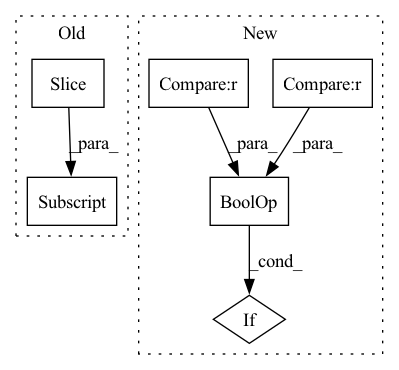

Pattern ID :15905
Before Change
image_path = osp.join(self._dataset_dir,
WiderFacePath.SUBSET_DIR + self._subset,
WiderFacePath.IMAGES_DIR, image[:-1])
item_id = image[:-(len(WiderFacePath.IMAGE_EXT) + 1)]
annotations = []
if "/" in item_id:
label_name = item_id.split("/")[0]
if "--" in label_name:After Change
lines = f.readlines()
line_ids = [line_idx for line_idx, line in enumerate(lines)
if ("/" in line or "\\" in line) and "." in line ] \
// a heuristic for paths
for line_idx in line_ids:In pattern: SUPERPATTERN
Frequency: 3
Non-data size: 6
Instances Fragment ID: 53681250
Project Name: openvinotoolkit/datumaro
Commit Name: 22728f23e850b31562cdb5da80cd34722a091574
Time: 2021-03-19
Author: maxim.zhiltsov@intel.com
File Name: datumaro/plugins/widerface_format.py
M Class Name: WiderFaceExtractor
N Class Name: WiderFaceExtractor
M Method Name: _load_items(2)
N Method Name: _load_items(2)
M Parent Class: SourceExtractor
N Parent Class: SourceExtractor
M File Name: datumaro/plugins/widerface_format.py
N File Name: datumaro/plugins/widerface_format.py
M Start Line: 68
M End Line: 115
N Start Line: 69
N End Line: 100
Before Change
// TODO: support arbitrary strides
def _pool2d(self, py, px):
xup = self[:, :, :self.shape[2]-self.shape[2]%py, :self.shape[3]-self.shape[3]%px] if (self.shape[2]%py != 0) or (self.shape[3]%px != 0) else self
return xup.reshape(shape=(xup.shape[0], xup.shape[1], xup.shape[2]//py, py, xup.shape[3]//px, px))
def avg_pool2d(self, kernel_size=(2,2)): return self._pool2d(*make_pair(kernel_size)).mean(axis=(3,5))After Change
// TODO: support arbitrary strides
def _pool2d(self, py, px, sy, sx):
if py > sy or px > sx : raise NotImplementedError("pool2d doesn"t support kernel_size > stride")
xup = self.slice(((0, self.shape[0]), (0, self.shape[1]), (0, (self.shape[2]+(sy-py))//sy*sy), (0, (self.shape[3]+(sx-px))//sx*sx)))
return xup.reshape(shape=(xup.shape[0], xup.shape[1], xup.shape[2]//sy, sy, xup.shape[3]//sx, sx))[:, :, :, :py, :, :px]
Fragment ID: 53681254
Project Name: geohot/tinygrad
Commit Name: c8d89eb20ed7991049dd9414f41f10e032a40f93
Time: 2023-02-22
Author: george@comma.ai
File Name: tinygrad/tensor.py
M Class Name: Tensor
N Class Name: Tensor
M Method Name: _pool2d(5)
N Method Name: _pool2d(3)
M Parent Class:
N Parent Class:
M File Name: tinygrad/tensor.py
N File Name: tinygrad/tensor.py
M Start Line: 290
M End Line: 291
N Start Line: 289
N End Line: 292
Before Change
current_time = 0
while roll[0] > 255:
roll = roll[1:]
roll = [roll[i * 7 : (i + 1) * 7] for i in range(0, len(roll) // 7)]
for step, event in enumerate(roll):
if event[0] == 1025:
breakAfter Change
break
if event[0] == 129 or 128 in event[1:]:
continue
if event[0] == 131 or 130 in event[1:] :
continue
instrument = event[0]
pitch = event[1] Fragment ID: 53681256
Project Name: rick-mccoy/reformer-pytorch
Commit Name: 3411114d22e0bfcae2e106f5c82a3211da83f409
Time: 2020-02-29
Author: rickmccoy3141@gmail.com
File Name: datasets/music.py
M Class Name: AnonimousClass
N Class Name: AnonimousClass
M Method Name: roll_to_midi(1)
N Method Name: roll_to_midi(1)
M Parent Class:
N Parent Class:
M File Name: datasets/music.py
N File Name: datasets/music.py
M Start Line: 38
M End Line: 66
N Start Line: 44
N End Line: 60